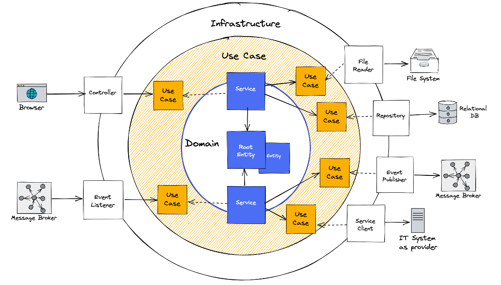
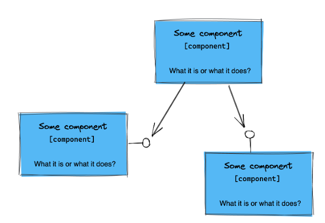

Clean Architecture Pattern Fundamentals⚓︎
Ports & Adapters Pattern⚓︎
Clean Architecture Pattern⚓︎
Look at ring model of the clean architecture pattern. Try to understand the fundamental separation of the domain and the infrastructure.

True or false?
- The infrastructure provides interfaces which the domain can implement.
- Adapter implementations (also known as adapters) are located within the infrastructure ring and are responsible to integrate and access infrastructure components (e.g. file system, http in- and outbound).
- The domain only depends on use cases located in the use case ring.
- The domain provides interfaces which will be implemented by adapters.
- Use case definitions are driven by adapters.
- The use case ring connects the infrastructure and the domain.
- Use case definitions are driven by domain.
Underlying Design Principles⚓︎
Common Closure and Separation of Concerns⚓︎
The common closure principles says:
The classes of a package should be closed together against the same kind of changes. A change that affects a package affects all the classes in that package and no other package.
Some people also say that the common closure principle describes the single responsibility principle for packages. The reason is that the same kind of changes is in most cases related to functional or domain-related requirements.
The conclusion is that the package should be sliced vertically by domain object and functions (e.g. vehicle or vehicle data) and not horizontally by technical characteristics (e.g. controller or services). There is another principle, the so-called separation of concerns, which describes the same idea.
Separation of concerns:
Separate different aspects of a problem and manage every sub-problem on its own. Based on this create semantical chunks, so that the complexity of each chunk can be handled easier.

Single Responsibility and SOLID⚓︎
The single responsibility principle says:
There should never be more than one reason for a class to change!
-Tom DeMarco & Meilir Page-Jones
In comparison to the common closure principle and separation of concerns, which affects the package level, the single responsibility principle affects the class level.
This is also the case for the other principles of SOLID. SOLID stands for:
- Single Responsibility Principle
- Open Closed Principle
- Liskov Substitution Principle
- Interface Segregation Principle
- Dependency Inversion Principle
During the training, we discuss the principles highlighted in bold.
An associated goal is to separate technical and domain-related aspects within the common closure.
This could be reached by class stereotypes containing a clear task, that this stereotype has to
do. The collection of classes is encapsulated in a common closure.
This means the application will be modularized around domain-related functionality with so-called domain modules.
For the clean architecture pattern, the class stereotypes can look like follows:

Structuring Domain Modules Within Clean Architecture⚓︎
At the top architectural level, the application is structured by domain modules.
For the internal structure of domain modules following variants are known:
- architectural expressive
- architectural expressive domain
- rings by layers
In this training the variant architectural expressive will be used.
Rings as Layers⚓︎
The domain module is structured simple according to the rings of the clean architecture pattern.

Architectural Expressive Domain⚓︎
In this variant the use case ring is separated in incoming (in) and outgoing (out) use cases. Additional, the domain ring is separared in service and model.

Architectural Expressive⚓︎
In this package structure variant the adapter ring is also structured according to the semantics of in and out.

Domain Ring⚓︎
Domain Model⚓︎
Coding Task 1.1
Implement a Self-Validating Domain Model- Create the root entity Vehicle and place it in the designated package
- Create the value object Vin and place it in the designated package
- Ensure that the Vehicle can only be created with a valid vehicle identification number (vin)
- Override equals, so that the Vehicle is the same object when the VIN is the same
- A vehicle identification number is valid when the value follows the regex pattern below. Throw an exception in case of validation errors.
VIN Regex Pattern for Java / Kotlin
// examples
// WP0ZZZ99ZTS392155
// WBAOLZ99ZTS349156
"(?=.*\\d|=.*[A-Z])(?=.*[A-Z])[A-Z0-9]{17}"
VIN Regex Pattern for C#
// examples
// WP0ZZZ99ZTS392155
// WBAOLZ99ZTS349156
"(?=.*\d|=.*[A-Z])(?=.*[A-Z])[A-Z0-9]{17}"
Verify Task 1.1
RUN DomainRing_Task_1_1RUN ArchitectureTest_Task_1_1
Domain Service⚓︎
Coding Task 1.2
Create the (Domain) Service for the Root Entity- Create the class stereotype (domain) service VehicleService and place it in the designated package
- The VehicleService should provide the method find by vin (see listings for java, kotlin and c#)
- Return a hard-coded instance of the class Vehicle with the vin
WP0ZZZ99ZTS392155
Java
public Vehicle findByVin(Vin vin){...}
Kotlin
fun findByVin(vin: Vin): Vehicle {
...
}
C#
public VehicleRootEntity FindByVin(Vin vin){...}
Verify Task 1.2
RUN DomainRing_Task_1_2RUN ArchitectureTest_Task_1_2